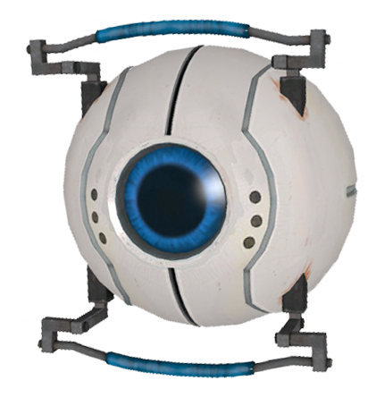

|  |
Cake Core
The Intelligence Core, also referred to as the Logic Core or Cake Core, is a personality core that appears in Portal.
It is one of the cores Chell knocks off of GLaDOS during the climactic "battle" at the end of the game. It was later destroyed in an Emergency Intelligence Incinerator.
The Intelligence Core speaks in a slow, monotonous voice, and spends its time reciting a cake recipe, which often has unusual or potentially lethal ingredients. As it speaks, it will roll lazily around, seemingly entranced in recipe recitation.
The Intelligence Core is voiced by Ellen McLain.
|